코드로 만드는 모션그래픽은 뭐가 다를까요
요즘 돌아다니는 모션그래픽 영상 중 상당수는 영상 AI(Artificial Intelligence)가 만든 게 아니에요. Claude가 코드를 짜고, 그 코드를 영상으로 렌더링한 거예요. 출발점부터 다르다는 게 이 영상의 첫 이야기예요.
왼쪽 'RASTER' 칸의 Seedance, Kling 같은 영상 생성 모델은 픽셀을 통째로 그려요. 화면에서 'CLAUDE' 글자가 빨간 픽셀 격자로 표현된 게 그 뜻이에요. 오른쪽 'VECTOR' 칸의 Claude는 원 하나를 그려도 x 960 · y 540처럼 좌표부터 정해요.
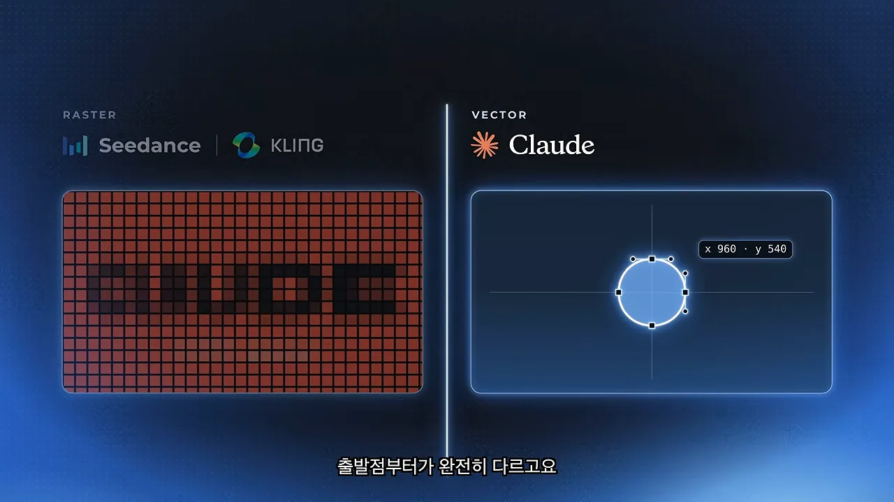
그래서 Claude 쪽은 도형 하나에도 위치, 크기, 길이, 등장 시점을 전부 적어야 해요. 아래 코드의 scale: 1.6은 크기, duration: 0.4는 움직이는 시간, delay: 1.2는 몇 초 뒤에 시작할지예요.
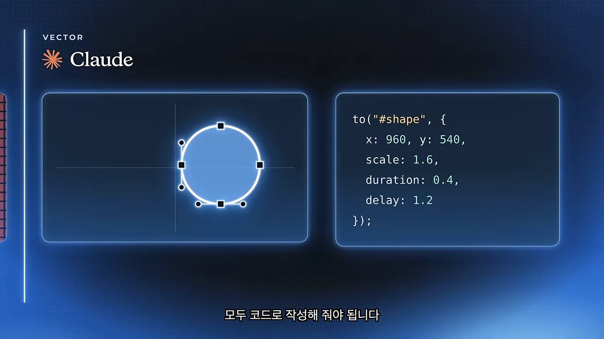
발표자는 처음에 '도형 몇 개 날아다니는 파워포인트 애니메이션의 비싼 버전'이 나올 거라고 봤어요. 모션그래픽은 화려함보다 타이밍, 이징, 리듬, 가독성이 중요한데, 이걸 코드로 하면 더 딱딱해질 거라는 걱정도 있었고요. 막상 해 보니 놀랄 만큼 잘 나온 영상도, 정말 안 되는 영상도 있었어요.
그래서 영상은 난이도를 세 단계로 올려 가며 경계를 찾아요. 프롬프트 한 줄, 레퍼런스 영상 분석, 이미지와 코드 결합 순서예요. 단계마다 영상 생성 모델 결과와 비교하고, 걸린 시간과 쓴 크레딧도 밝혀요.
프롬프트 한 줄로 쇼릴 만들기
첫 단계는 요즘 유행하는 '포트폴리오 쇼릴 만들어 줘' 프롬프트예요. Claude 앱에서 프로젝트 폴더를 하나 지정하고, 모델은 Opus 5.5, 추론 성능은 '높음' 이상으로 골라요. 발표자는 여기서 아끼면 결과물도 아껴서 나온다고 해요.
그냥 '15초 쇼릴 만들어 줘'라고 하면 아무 관계없는 영상이 나올 게 뻔해요. 그래서 하이라이트된 부분처럼 '유튜브 채널 디자인하는AI를 리서치한 뒤 적절한 내용이 들어가도록' 하라고 덧붙였어요. 입력창 아래에 Opus 5.5가 선택된 것도 보여요.
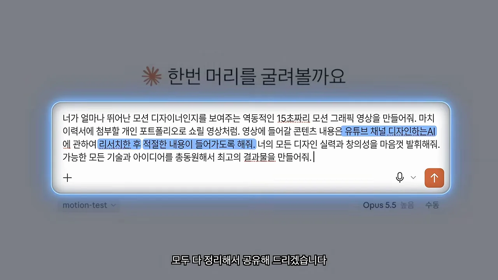
약 20분 뒤 폴더에 결과가 들어왔어요. '01 SUBSCRIBERS' 칸에는 구독자 수가 9.92만 명으로, '02 TOP VIDEO VIEWS' 칸에는 조회수가 숫자가 굴러가는 효과로 나와요.
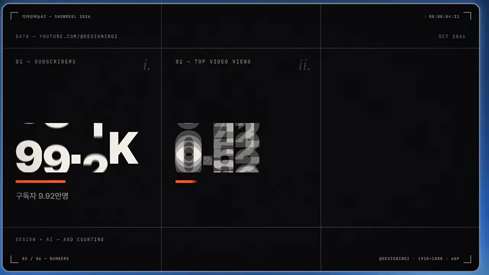
나머지 영상들은 카드로 쭉 넘겨 보여 줘요. 312만 조회 영상 카드가 기울어진 채 지나가는 장면이에요. 'Figma 변수 200개 등록' 영상은 따로 그래픽으로 만들었어요.
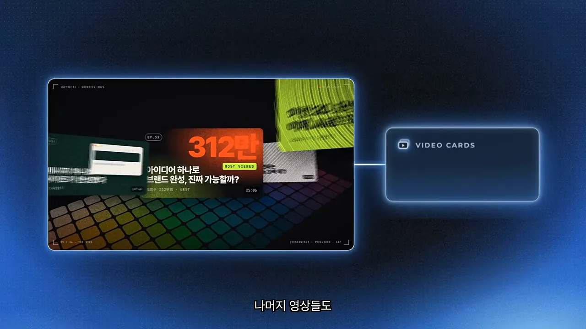
발표자 평가는 '나쁘진 않은데 보자마자 코드로 만든 티가 난다'예요. 깔끔하지만 모션 디테일이 아쉽고, 배경음악은 AI가 만든 듯한 단조로운 전자음이었어요.
음악 BPM에 맞춰 다시 만들기
그래서 Claude에게 음원을 직접 찾아 내려받게 했어요. 그다음 BPM(Beats Per Minute)과 강박이 오는 타이밍을 분석하고, 비트에 맞춰 텍스트와 모션이 나오게 했어요. 오른쪽 위에 125 BPM · 4/4가 찍혀 있고, 아래 'STOMP'·'CLAP' 표시가 박자를 따라 움직여요.
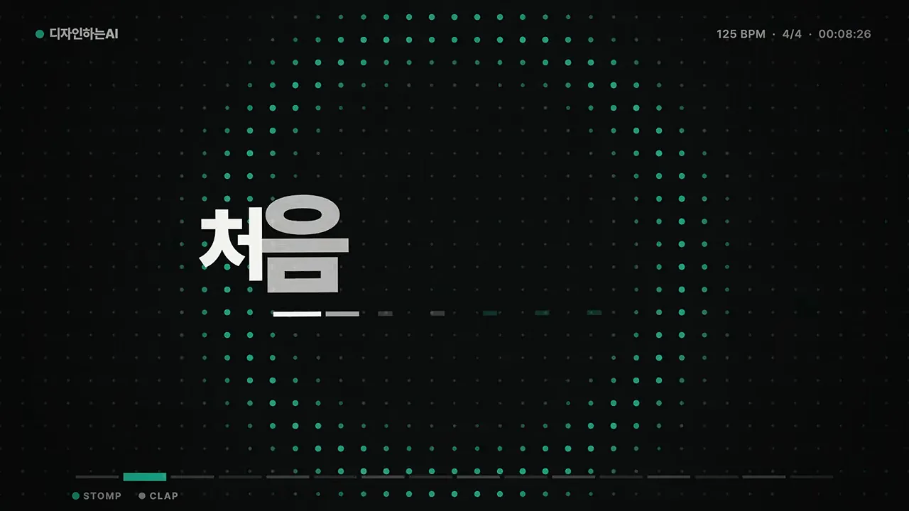
왼쪽(1 Prompt)과 오른쪽(+ BPM Sync)의 'QUALITY' 막대 길이가 거의 같아요. 박자는 맞췄지만 퀄리티는 비슷하다는 뜻이에요.
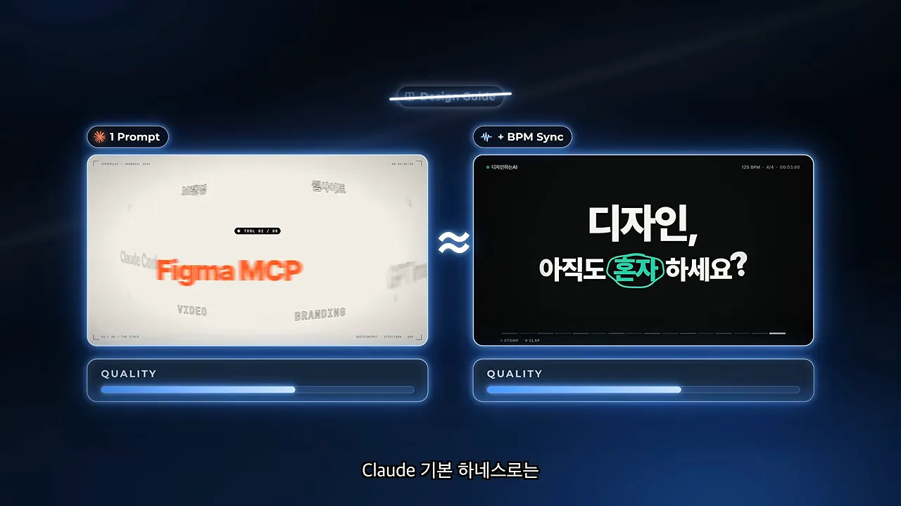
같은 영상을 영상 생성 모델로 만들면
같은 프롬프트를 이번에는 영상 생성 모델로 돌렸어요. 영상 생성 플랫폼(Newtake)을 MCP(Model Context Protocol)로 Claude에 연결하고, Seedance와 MiniMax로 한글 키네틱 타이포그래피 영상을 하나씩 만들게 했어요.
승인 창이 계속 뜰 때
이런 커넥터는 도구를 쓸 때마다 '거부 / 항상 허용 / 한 번 허용'을 묻는 창이 계속 떠요. 화면처럼 여러 장이 겹쳐 쌓이면서 작업이 자꾸 멈춰요.
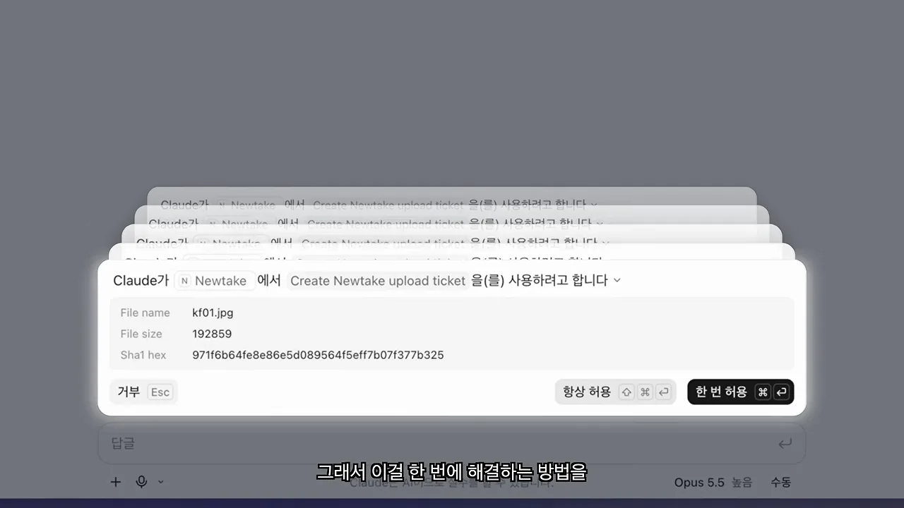
해결은 Claude 설정 → 커넥터에서 해당 커넥터를 찾아 들어가는 거예요. 거기서 도구 권한을 모두 '항상 허용'으로 바꾸면 더는 묻지 않고 진행돼요.
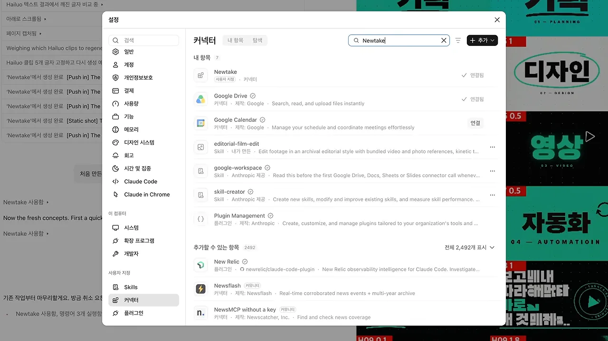
비용과 결과
플랫폼 사용 내역의 포인트 열을 보면 한 번 생성에 -330과 -1,650이 번갈아 찍혀 있어요. MiniMax H3가 330크레딧, Seedance 2.5가 1,650크레딧이에요.
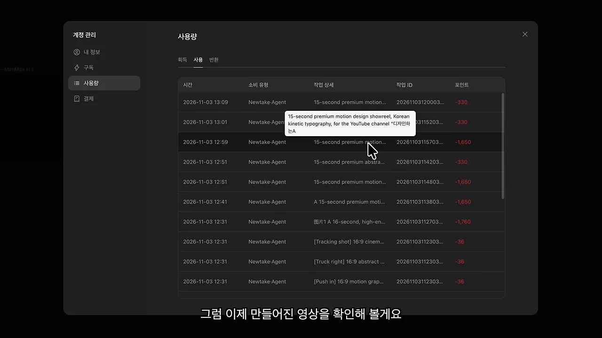
그런데 1,650크레딧을 쓴 Seedance 결과는 채널 이름 '디자인하는AI'가 '디저인하는 AI'로 나왔어요. 한글 표현에 문제가 많았어요.
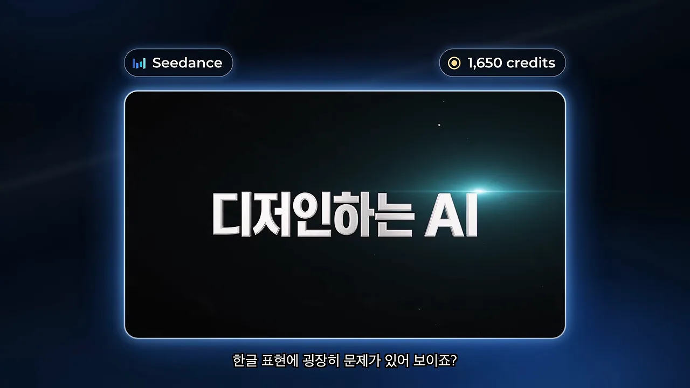
MiniMax 결과는 330크레딧이었지만, 타이포그래피가 많은 키네틱 모션에서는 오히려 더 나았어요. 네온 테두리의 '자동화' 글자가 비교적 또렷해요. 다만 두 모델 모두 글자가 뭉개지고 일그러지는 현상은 똑같이 나타났어요.
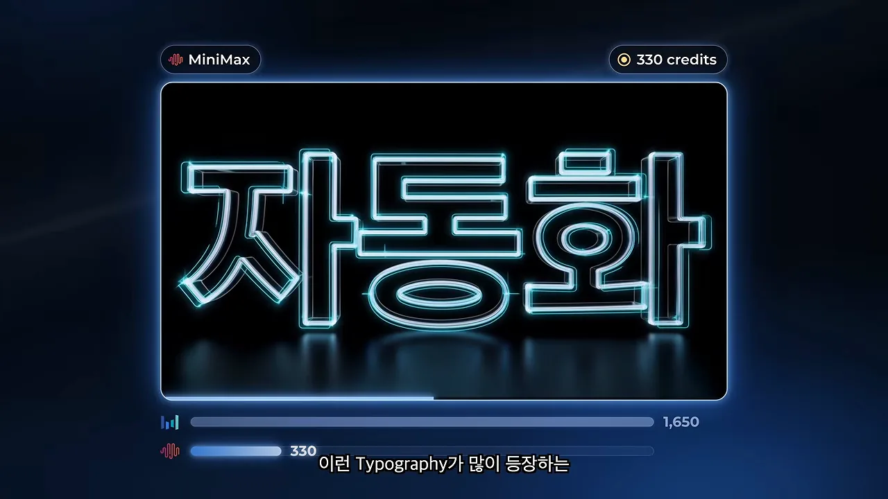
영어로 만들면 결과가 훨씬 좋아요. 'FAIL.' 글자가 유리처럼 깨지는 장면은 글자 모양이 그대로 살아 있어요.
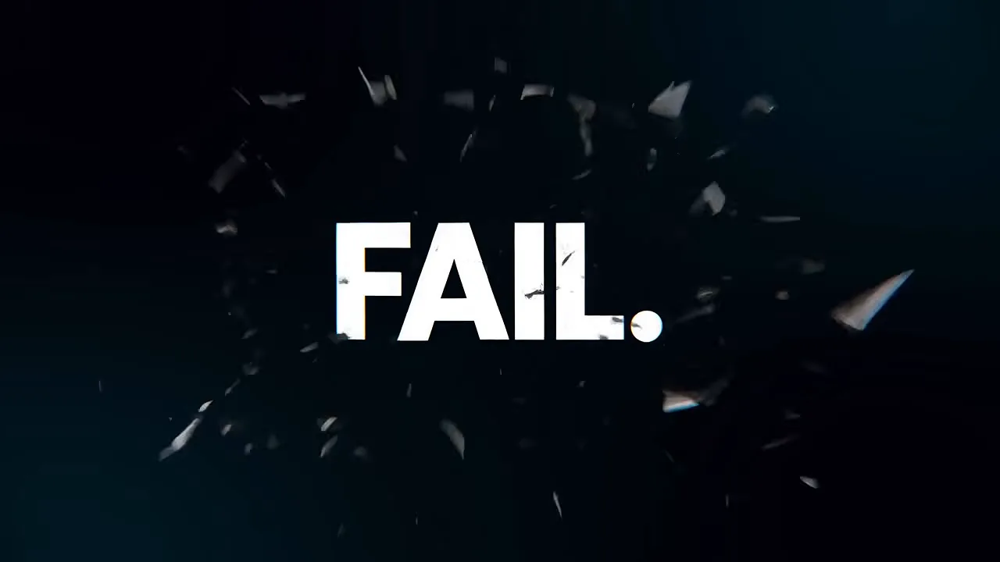
모션그래픽에 자주 쓰는 플랫 일러스트레이션 스타일도 영상 생성 모델이 훨씬 잘 만들어요. 발표자가 같은 스타일을 코드로 구현해 보니 아직 많이 아쉬웠다고 해요.
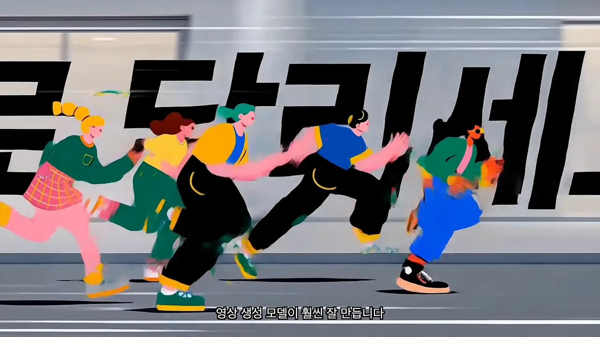
정리하면
마지막 비교 화면에서 왼쪽 Seedance는 '94K 구독자'로, 오른쪽 MiniMax는 '99K 0.3M'처럼 숫자 일부가 뭉개졌어요. 아래 칸에는 'MOTION', 'TIME(5 MIN)', 'TEXT' 기준이 보여요.
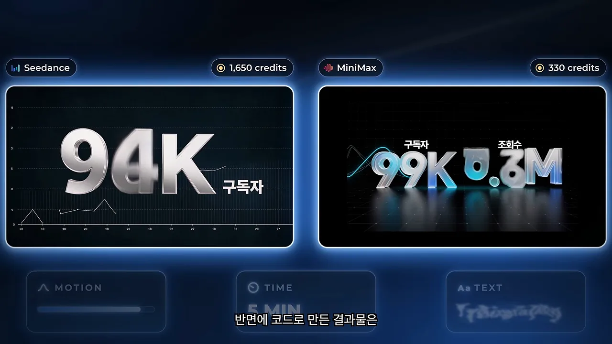
| 기준 | 영상 생성 모델 | 코드(Claude) |
|---|---|---|
| 움직임·구성 | 코드보다 좋았어요 | 다소 아쉬웠지만 프롬프트로 고칠 수 있어 보여요 |
| 만드는 시간 | 약 5분 | 약 20분(한 줄 프롬프트 기준) |
| 글자 | 뭉개지고 일그러져요(특히 한글) | 깨지지 않아요 |
| 수정 | 다시 생성해야 해요 | 숫자만 바꾸면 돼요(예: size: 96) |
| 잘 맞는 스타일 | 플랫 일러스트레이션, 캐릭터 | 글자·도형 중심의 그래픽 |
잘 쓴 프롬프트 하나의 차이
다음은 '정말 잘 쓴 프롬프트'를 주면 어떻게 되는지예요. 잘 쓴 프롬프트란 내가 모션 디자이너가 된 것처럼 모든 요소를 하나하나 지시하는 걸 말해요. 화면 가운데 프롬프트에는 이징(ease: "expo.inOut"), 카메라(push-in 1.6x), 길이와 간격(duration: 0.8s, stagger: 0.08s), 색(palette), 흐림(blur: 18px → 0)까지 숫자로 적혀 있어요.
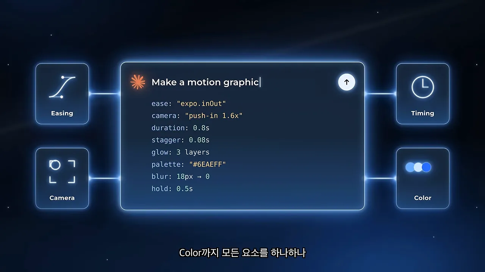
관련 지식이 없으면 이런 프롬프트를 쓰기 어려워요. 하지만 Claude로 모션그래픽을 뽑는 사람이 많아지면서, 결과물과 프롬프트를 모아 둔 '모션그래픽 맛집' 사이트들이 생겼어요.
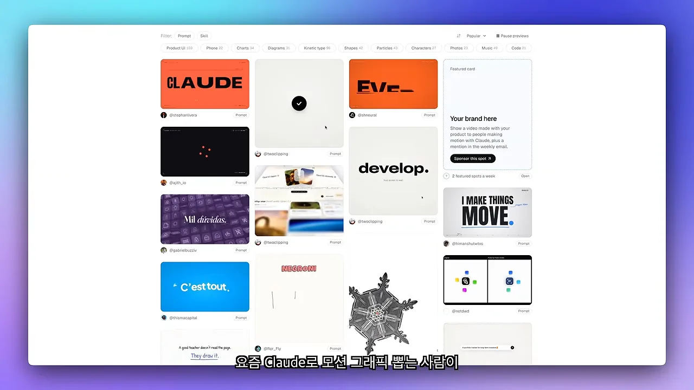
발표자는 UI(User Interface) 모핑 애니메이션을 골랐어요. 오른쪽 프롬프트를 보면 <direction>에 '도형 하나가 끊기지 않고 크기·모서리·색을 바꾸며 변한다', 금지 항목(통통 튀는 이징, 파티클, 글로우)이 있어요. <structure>에는 '120 BPM, 7마디, 박마다 무언가 일어난다'와 버튼 → 로더 → 다이내믹 아일랜드 → 음악 플레이어로 이어지는 흐름이 적혀 있어요.
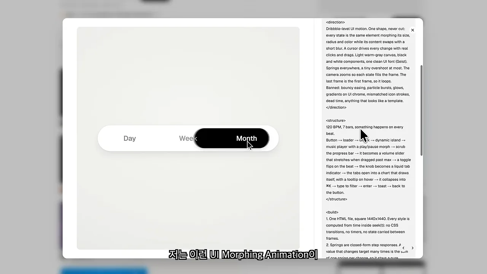
결과는 UI 완성도, 그래픽, 모션이 전부 몇 단계씩 올라갔어요. 코드로 만들었다고 말하지 않으면 처음 보는 사람은 모를 수준이에요. 버튼이 'Midnight Loop' 음악 플레이어로 바뀌는 장면처럼, 이징의 '쫀득한' 감속과 클릭할 때 살짝 반응하는 마이크로 애니메이션이 살아 있어요. 타이밍은 음악에 맞고, 글자는 움직이는 중에도 또렷해요.
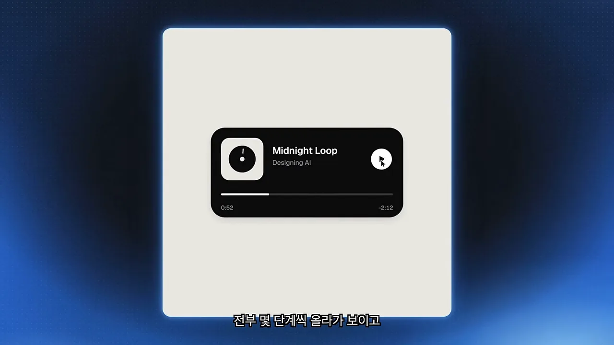
같은 프롬프트를 GPT로 돌리면
요즘 LLM(Large Language Model)은 상향 평준화됐다니까, 같은 프롬프트를 ChatGPT의 GPT-6에도 넣어 봤어요. 화면은 '14초 · 1440×1440 · 60fps' 결과물이에요. 구성은 비슷했지만 이징이 덜 들어가서 모션이 뻣뻣했어요. 그래프를 클릭하면 숫자가 촤라락 바뀌는 마이크로 애니메이션도 빠졌고요.
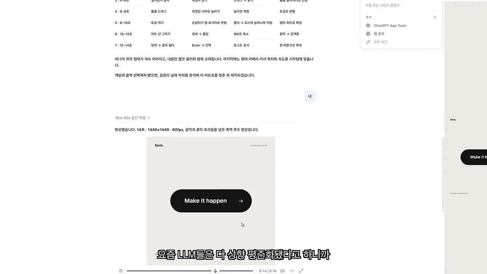
용어를 모를 때, 그리고 코드가 잘하는 스타일
이징 같은 용어를 잘 모르면 모션그래픽 파티클과 효과를 정리해 둔 자료를 찾아보면 돼요. 화면은 X에 올라온 'Claude Motion Graphics' 모음이에요. 효과마다 이름이 붙은 썸네일이 격자로 정리돼 있어요.
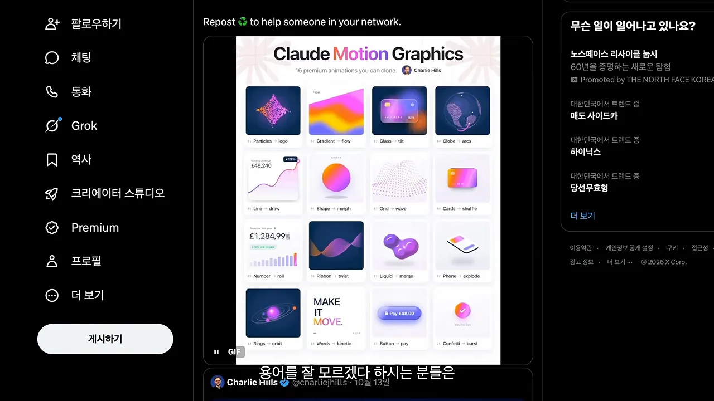
규칙과 과정으로 정의되는 스타일은 한 줄 프롬프트로도 코드가 특히 잘 만들어요. 영상이 꼽은 스타일은 이래요.
- 아스키 아트, 픽셀 아트
- 드로잉, 다빈치 스케치
- 리소그래프 스톱 모션, 잉크 번짐
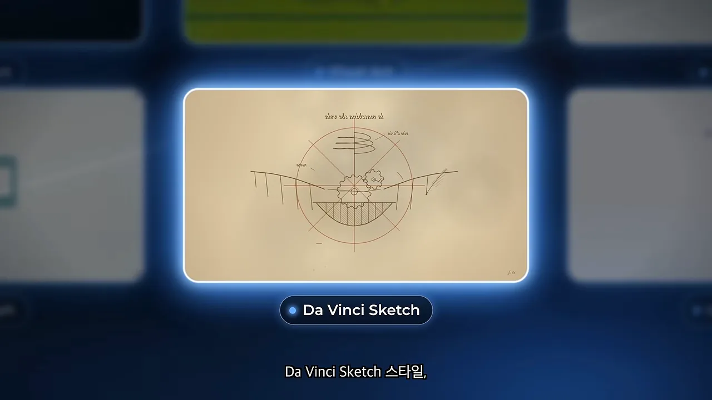
레퍼런스 영상을 분석시켜 만들기
프롬프트 사이트는 편하지만 한계가 있어요. 기존 프롬프트는 그대로 두고 내 정보만 뒤에 붙이는 방식이라 연출과 구성이 똑같아요. 정말 괜찮은 모션그래픽은 디자이너가 After Effects 같은 툴로 만든 게 많아서 프롬프트 자체가 없는 경우도 많고요.
그래서 레퍼런스 영상을 AI에게 직접 분석시켰어요. 요즘 AI는 브라우저를 돌아다닐 수 있어서 링크 하나만 줘도 돼요. 레퍼런스는 Metics Media 채널의 'Hermes Agent 초보자 완벽 가이드' 영상이에요.
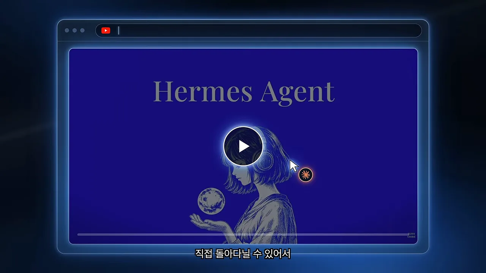
발표자가 꼽은 레퍼런스의 장점은 이래요. 전문 UI 디자이너가 만든 것처럼 깔끔하고, 아이콘은 필요한 곳에만 나와요. 포인트 색은 하나만 쓰고, 특히 회색을 튀지도 죽지도 않게 잘 써요. 무엇보다 추상적인 내용을 시각화하는 모션이 뛰어나요.
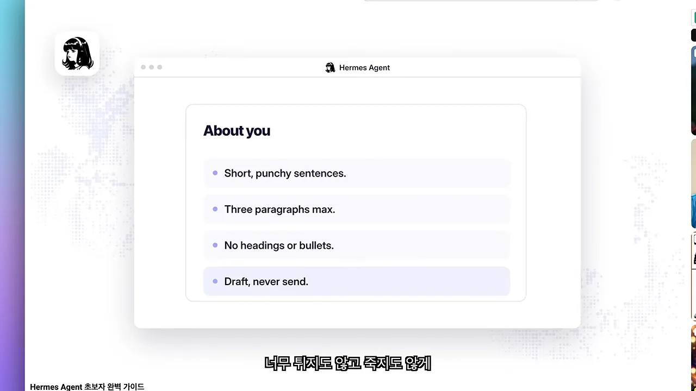
프레임 단위로 분석시키기
프롬프트는 짧아요. 링크와 함께 '첫 시작부터 5분 구간만 프레임 단위로 상세하게 분석해 줘. 사람이 나오는 부분은 필요 없고 모션그래픽만 분석해서 가이드 문서로 정리해 줘'라고 적었어요.
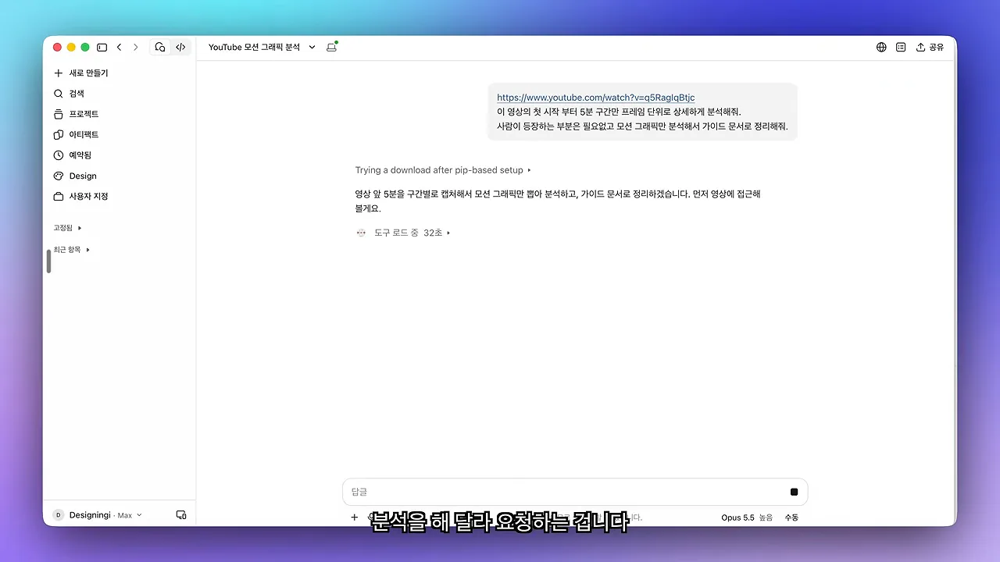
발표자가 얻은 팁은 캡처 간격이에요. AI는 영상을 스크린 캡처로 떠서 분석하는데, 캡처가 촘촘할수록 분석이 좋아지고, 그걸로 만드는 결과도 좋아져요. 그래서 전 구간이나 인트로, 구간별 시간대를 정해 '프레임 단위로' 분석하라고 요청하라고 해요.
결과 문서를 보면 '대각선 3밴드 와이프' 전환 하나를 0.03초 단위로 쪼개 놨어요. 프레임 0에서 +14까지 라벤더, 라일락, 블루 밴드가 어떤 순서로 들어오고 빠지는지가 표로 적혀 있어요.
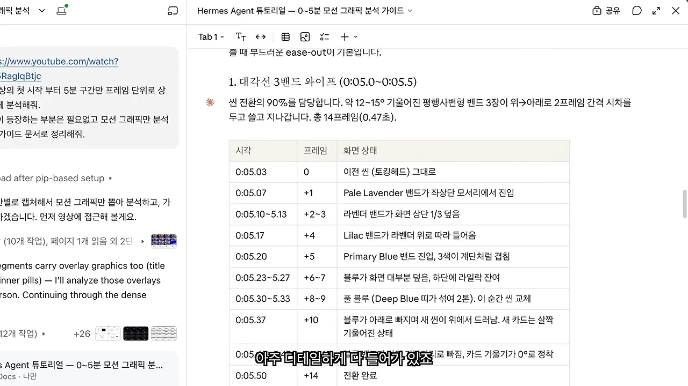
문서에는 이 밖에도 디자인 시스템의 색, 타이포그래피, 카드와 아이콘 스타일, 배경, 타임라인까지 정리돼 있어요.
분석 결과로 설명 영상 만들기
이 분석을 바탕으로, 지난 영상에서 쓴 키네틱 타이포그래피 대본을 주고 설명 영상을 만들게 했어요. 내레이션은 Google AI Studio에서 API(Application Programming Interface) 키를 받아 Gemini의 무료 TTS(Text-to-Speech)로 넣었어요.
결과는 음성, 배경, 디자인, 모션 모두 레퍼런스와 거의 비슷한 스타일로 깔끔하게 나왔어요. 그런데 크게 아쉬운 점이 두 가지 있었어요. 오른쪽 라벨처럼 카메라가 고정돼 있고(Static Camera), 줌이 없고(No Zoom), 전환이 밋밋해요(Flat Transition). 장면을 이어 주는 일관된 요소도 없어서 슬라이드를 넘기는 느낌이 나요.
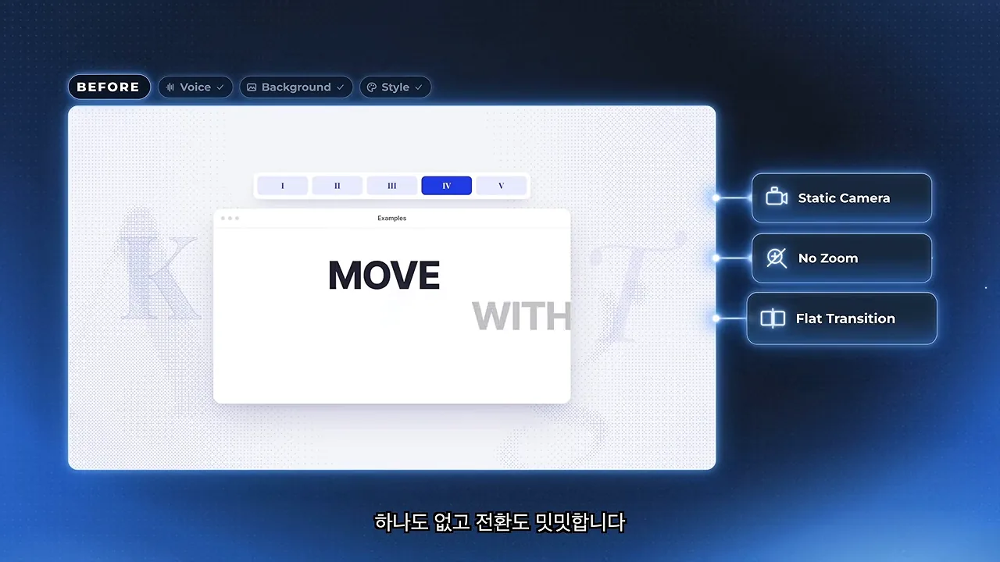
카메라 워킹과 일관된 요소에 대해 피드백을 주자 결과가 달라졌어요. 위쪽 I~V 탭이 장면이 바뀌어도 화면에 계속 남아 이어 주는 요소가 됐고, 카메라가 카드 사이를 옮겨 다녀요.
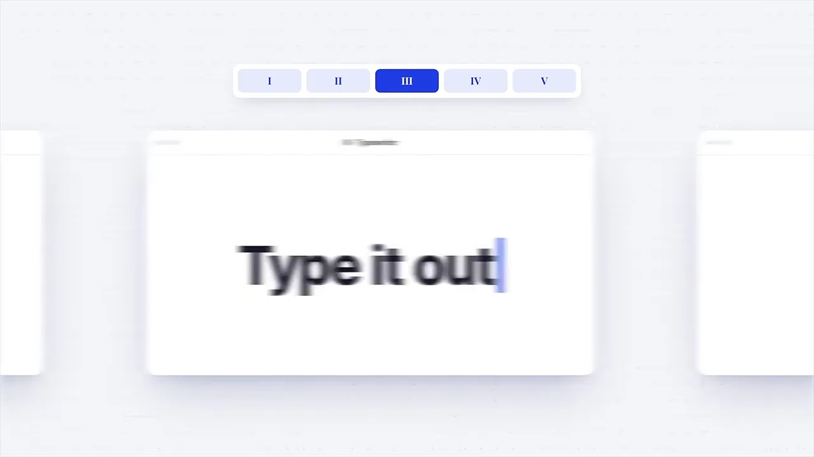
타이밍을 설명하는 장면도 생겼어요. 제목, 부제, 강조가 타임라인에서 언제 시작하고 끝나는지를 막대로 보여 줘요.
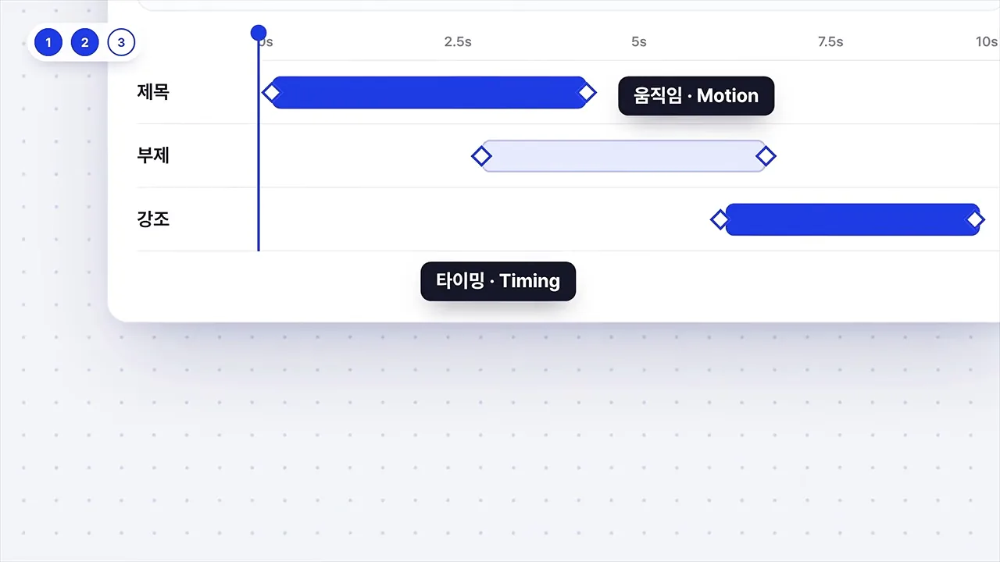
스킬로 저장하고, 고치기 쉽게 만들기
원하는 스타일로 다듬어 놓으면 다음에도 똑같이 만들 수 있어야 해요. 한 번 쓰고 버리기엔 아까우니까요. 이럴 땐 스킬로 저장해요. 입력창에 적은 요청은 '지금까지 대화한 맥락을 모두 확인해서, 다음에도 새로운 콘텐츠로 이런 스타일의 모션그래픽 영상을 만들 수 있도록 전역 스킬로 등록해'예요.
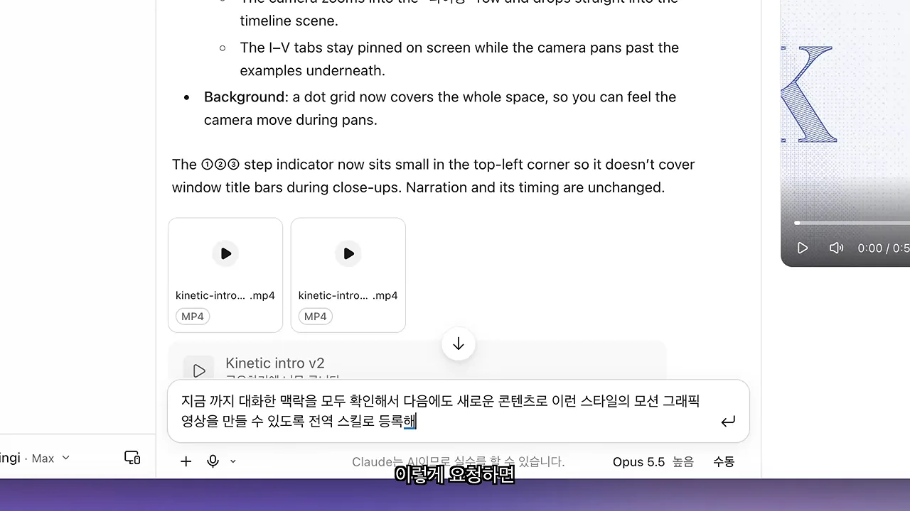
그러면 Claude의 skill-creator가 알아서 정리해, 다른 프로젝트에서도 부를 수 있는 전역 스킬로 만들어 줘요. 화면에서는 cobalt-window-camera-motion이라는 이름으로 만들었고, 기존 어두운 스타일 스킬과는 따로 뒀다고 답해요. 스킬에는 네 가지가 담겼어요.
- 피드백에서 나온 규칙: 카메라 움직임과 장면 연결을 첫 버전부터 넣고, 같은 정보를 두 번 연달아 보여 주지 않아요.
- 디자인: 코발트 색 팔레트, macOS 스타일 창, 챕터 탭과 단계 표시 스타일, 폰트와 GSAP(GreenSock Animation Platform) 파일
- 그대로 다시 쓰는 코드: 큰 캔버스 하나를 누비는 카메라, 줌인, 모션 블러가 들어간 휩 팬, 장면을 넘어 이어지는 요소
- 내레이션 맞추기: 애니메이션을 키워드에 맞추는 타이밍 표. 음성이 바뀌면 파일 하나만 다시 만들어요.
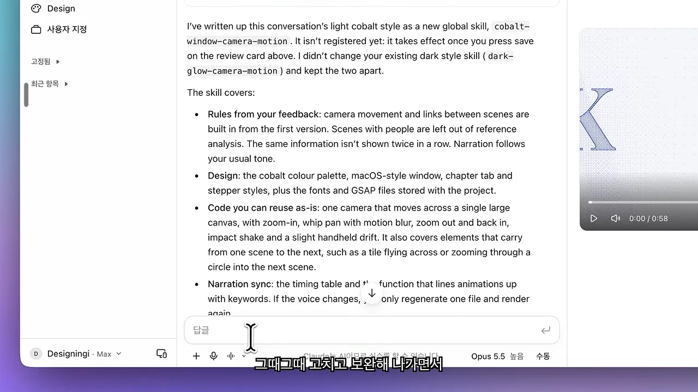
그다음부터는 이 스킬로 계속 만들면서, 마음에 안 드는 디테일이 보이면 그때그때 고쳐 스킬을 키워 가면 돼요. 그러면 결과물이 점점 좋아져요.
고치기 쉽게 만들기: HyperFrames와 Remotion
만든 결과를 고칠 때 팁이 있어요. 처음 만들 때부터 HyperFrames나 Remotion으로 만들어 달라고 하는 거예요. 그래야 레이어별로 고치고 오브젝트 크기도 직접 만질 수 있어요. 그렇지 않으면 요소 하나 고칠 때마다 AI와 채팅해야 해요.
화면은 HyperFrames 편집기예요. 가운데 미리보기에서 탭 요소를 선택하자 오른쪽 Design 패널에 채우기 색과 글자 색 값이 뜨고, 아래에는 타임라인이 있어요.
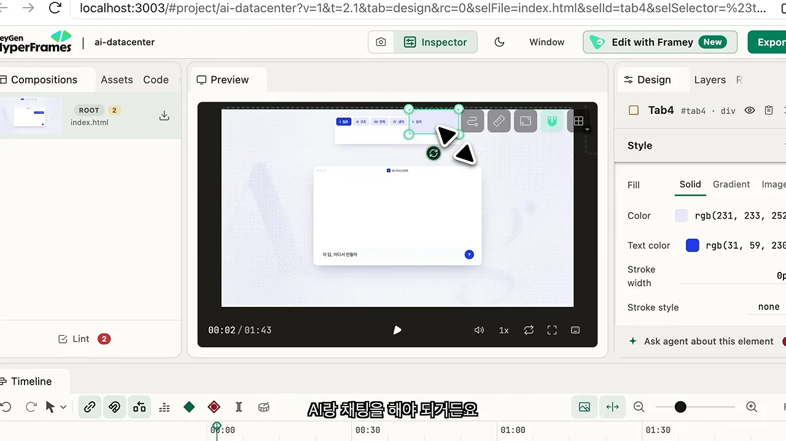
설치는 '설치해 줘'라고 요청하면 돼요. 둘 다 코드로 영상을 만드는 프레임워크로, AI로 영상을 만들 때 필요한 기능을 모아 둔 개발 도구에 가까워요. HyperFrames는 HTML(HyperText Markup Language)로, Remotion은 React로 화면과 움직임을 만들고 MP4(MPEG-4 Part 14)로 뽑아 줘요. 수정할 일이 없다면 굳이 안 써도 된다고 해요.
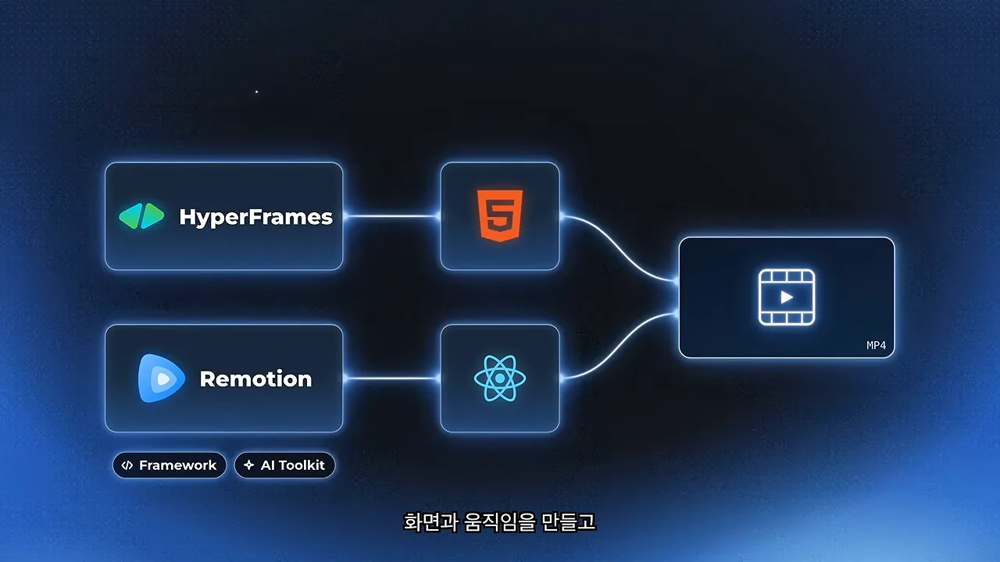
이미지 에셋 + 코드: 4단계 워크플로우
여기까지 만든 건 전부 코드로 그린 벡터 그래픽이에요. 코드는 도형이나 글자처럼 딱 떨어지는 건 잘 그려요. 하지만 픽셀 이미지가 주는 질감, 찢어진 종이 결, 사진 같은 디테일, 빛과 그림자의 미묘한 느낌은 내기 어려워요. 그래서 이미지 에셋을 먼저 만들고, 그걸 코드로 움직이는 방식을 시도했어요.
이것도 레퍼런스가 먼저예요. 발표자는 Pinterest에서 페이퍼 콜라주 스타일 영상을 골랐어요. 새, 하늘, 빨간 띠가 모두 종이를 찢어 붙인 것처럼 보이고, 여러 겹이 쌓여 깊이감이 있어요. 움직임은 살짝 툭툭 끊기는 스톱 모션이에요.
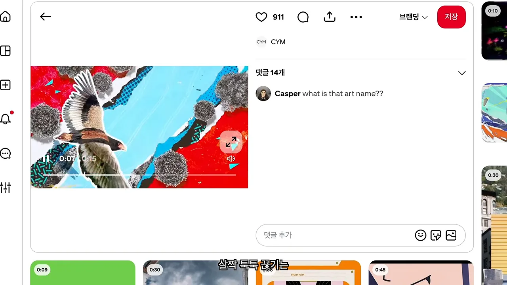
이런 영상까지 코드로 될지 걱정됐지만, 단계를 잘 나누면 될 거라 보고 작업을 네 단계로 나눈 프롬프트를 썼어요. 핵심은 레퍼런스를 뜯어보고 무엇을 이미지로, 무엇을 코드로 만들지 나누는 거예요.
1단계 분석: 움직임은 코드, 질감은 이미지
장면 전환, 카메라, 스톱 모션, 리듬 같은 움직임은 코드로 만들 부분으로, 찢어진 종이 같은 질감은 이미지로 만들 부분으로 나눠요. 왼쪽 Code 칸에 Transition·Camera·Stop-motion이, 오른쪽 Image 칸에 Torn Paper가 들어간 게 그 구분이에요. 이 판단은 전부 코드로 측정한 숫자를 근거로 해요.
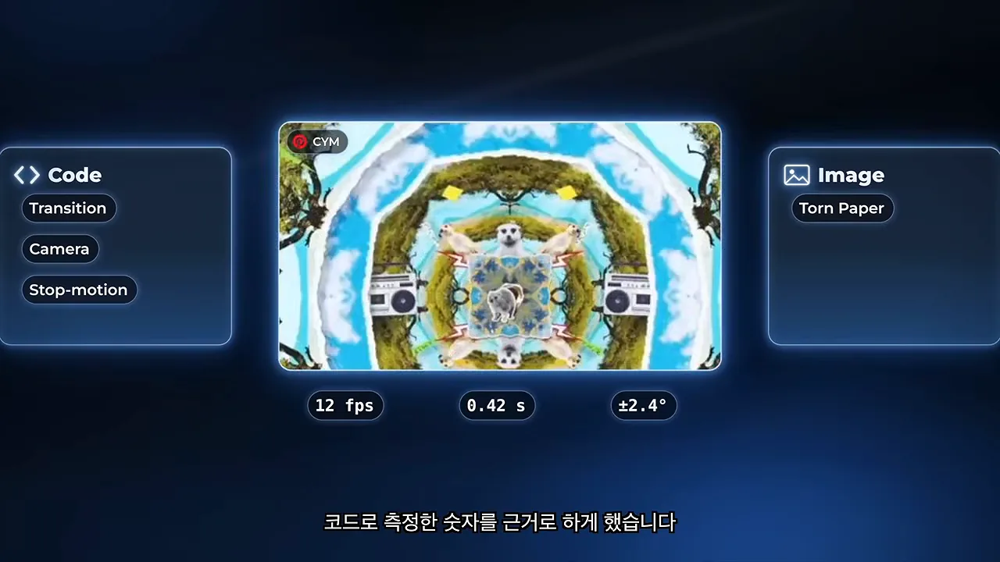
2단계 계획: 효과 사양표
분석을 바탕으로 새 주제에 맞게 장면을 다시 짜고, 필요한 이미지 에셋을 설계해요. 여기서 핵심은 효과 사양표예요. 효과마다 근거('EVIDENCE'), 구현 방법('METHOD'), 코드에 넣을 숫자('VALUE')를 한 줄씩 적어요. 첫 줄은 '2~3프레임씩 멈춘다 → steps() → 12fps'예요. 디자이너가 '좀 더 뚝뚝 끊기게 해 주세요'라고 하던 걸 숫자와 코드로 옮기는 셈이에요.
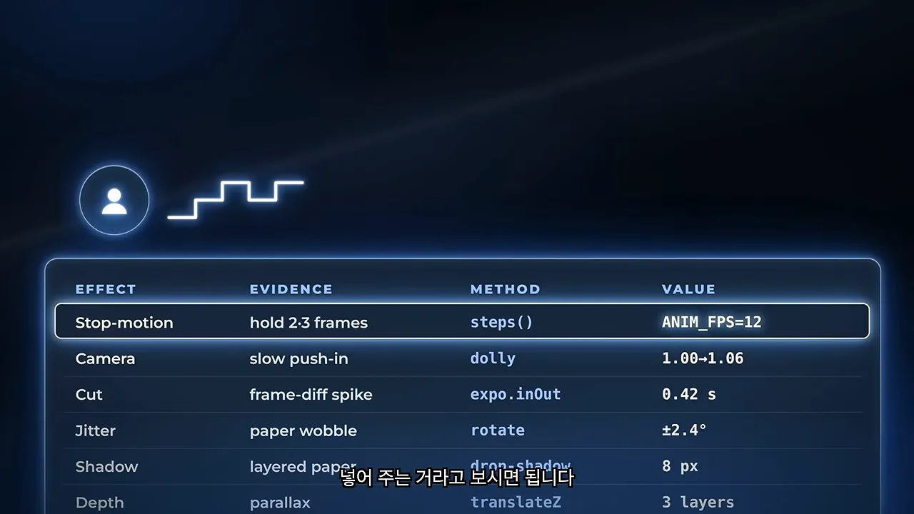
그리고 크레딧을 쓰기 전에 여기서 멈추고 승인을 받게 했어요. 계획을 고칠 기회를 두려는 거예요.
3단계 생성, 4단계 검수
생성 단계에서는 이미지를 이미지 생성 모델로 만들고, 코드는 사양표 숫자 그대로 그 이미지를 움직여요. 검수 단계에서는 레퍼런스를 측정한 코드를 결과물에도 똑같이 돌려 숫자로 비교해요. 화면 예시에서는 컷 길이가 0.42초로 같지만, fps는 12 대 9, 흔들림은 ±2.4° 대 ±1.1°로 달라요. 이렇게 차이가 크면 고쳐서 다시 렌더링하게 했어요.
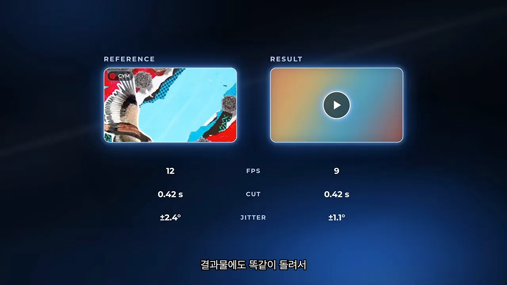
Claude는 감독, 이미지 모델은 미술 팀
Claude는 코드는 기가 막히게 짜지만 이미지는 직접 만들지 못해요. 그래서 발표자는 영상 생성 플랫폼(Newtake)의 MCP로 GPT(Generative Pre-trained Transformer) 이미지 모델이나 Nano Banana 같은 이미지 모델에 연결해 에셋을 만들었어요. ElevenLabs 같은 모델도 쓸 수 있어서 배경음악까지 한곳에서 만들어요. Claude가 감독이고, 플랫폼이 미술 팀과 음악 팀인 셈이에요.
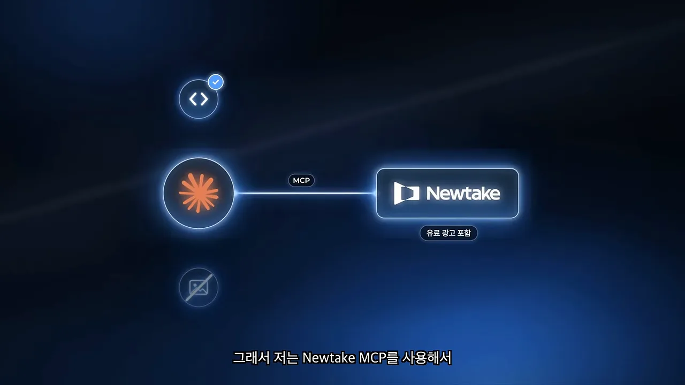
레퍼런스 링크와 미리 준비한 프롬프트를 넣고, 주제는 '공룡 시대의 행성 충돌'로 바꿨어요. 길이는 레퍼런스와 같은 15초, 모델은 Opus 5.5에 추론 성능 '높음'이에요. 프롬프트 뒷부분을 보면 네 단계가 그대로 들어 있어요. 5번은 '정리해서 보여 주고 Newtake 생성은 시작하지 말고 멈춰'이고, 2단계 제작의 8번은 검수를 두 가지로 나눠요. 하나는 형태 오류·위치 튐·전환 끊김 같은 결함, 다른 하나는 같은 방식으로 다시 측정해 레퍼런스와 비교하는 닮음이에요.
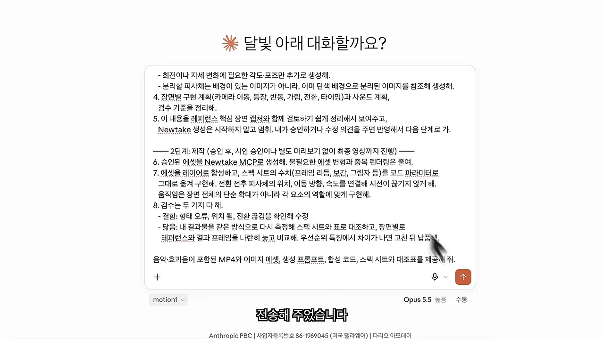
결과: 공룡 시대 행성 충돌
보내고 나면 Claude는 바로 모션그래픽을 만들지 않고 계획서부터 가져와요. 왼쪽 답변에 '스펙 시트와 장면 대응표, 에셋·구현 계획을 정리한 뒤 승인 전에 멈추겠다'고 적혀 있어요. 오른쪽 계획서는 레퍼런스를 장면(R3, R4 …)마다 프레임 범위로 쪼개고, 장면별 캡처 두 장과 함께 무엇이 어디서 얼마나 움직이는지 적어 놨어요.
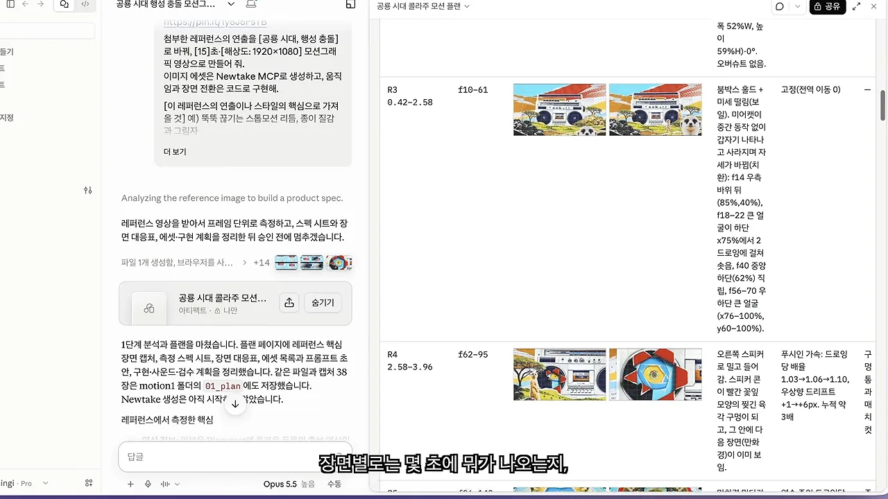
계획서에는 이 밖에도 찢은 종이 사진 콜라주, 12프레임으로 끊어 보여 주는 스톱 모션 같은 특징이 정리돼 있어요. 색은 전 구간에서 10가지를 뽑아 비율까지 적었고, 사운드는 134 BPM으로 분석했어요. 효과도 사양표로 정리돼 있어요.
그다음 '같은 구조, 새 소재' 표가 나와요. 레퍼런스의 각 장면을 공룡 주제로 바꿔 끼운 대응표예요. 예를 들어 0.25~0.42초 '붐박스 낙하'는 '티라노사우루스 컷아웃이 위에서 떨어져 안착'으로 바뀌고, 구현 방식 칸에 배경·컷아웃·코드 중 무엇으로 만들지 표시돼요.
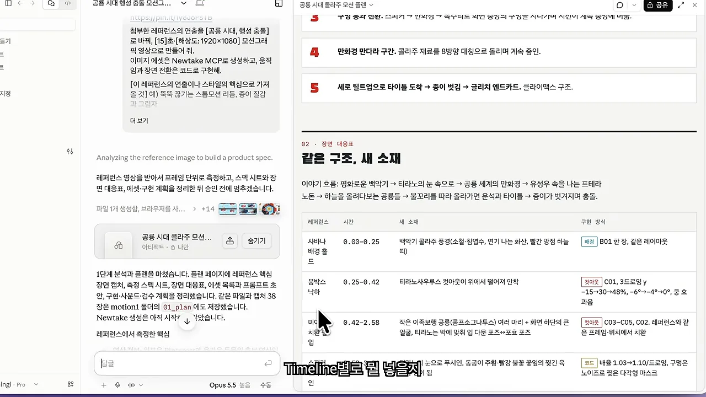
에셋 목록에는 이미지 17장이 ID, 용도, 형태(배경판·컷아웃), 해상도와 함께 영어 프롬프트 초안까지 적혀 있어요. 프레임 계획, 사운드 계획, 합격 조건도 있고요. 고칠 게 있으면 여기서 고치면 되는데, 발표자는 없어서 그대로 진행했어요.
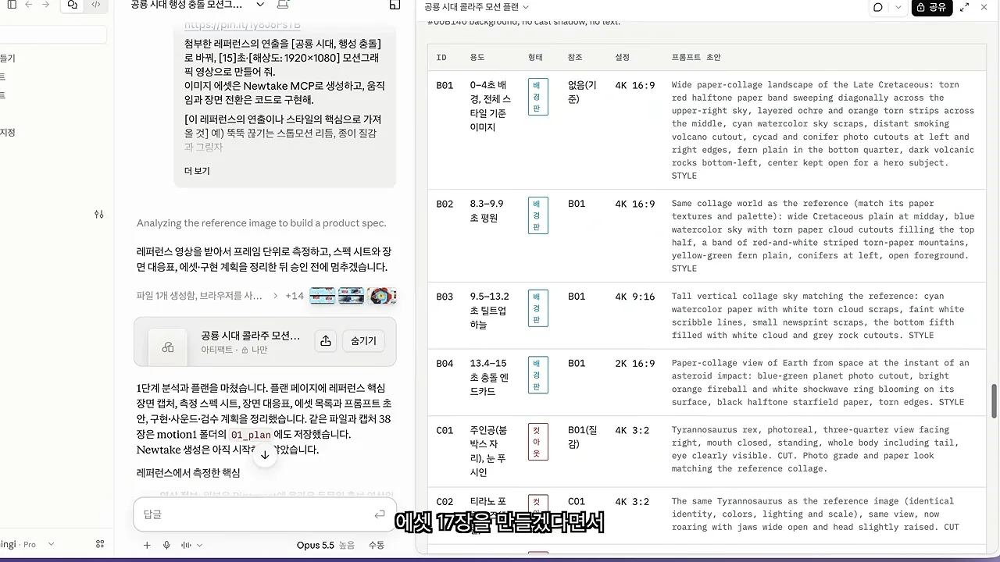
2시간 뒤 나온 결과
약 2시간 걸려 영상이 완성됐어요. 이미지 에셋을 하나하나 코드로 움직이니 움직임이 단조롭지 않아요. 찢은 종이 하늘, 화산, 풀밭, 행성, 공룡이 여러 겹 레이어로 쌓여 깊이감과 거리감이 확실히 살아 있어요.
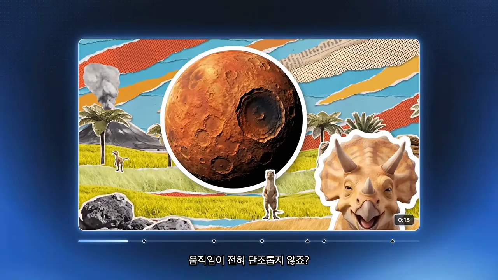
복잡한 연출도 꽤 잘 나왔어요. 콜라주 재료를 대칭으로 돌려 만든 만화경이 펼쳐지는 장면이 대표적이에요. 날갯짓하며 날아가는 익룡과 그 그림자가 따라오는 장면도 있어요.
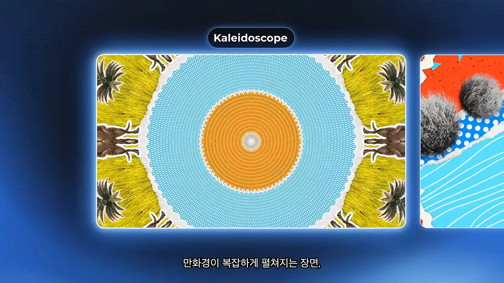
쓴 에셋은 몇 장 안 돼요. 공룡 머리, 공룡 무리, 운석, 익룡, 화산, 타이틀 로고 정도예요. 이걸로 모션이 풍부하게 나온 건 움직임을 코드가 맡았기 때문이에요. 종이 찢어진 텍스처와, 면을 나눠 찢은 조각에 이미지를 입힌 것도 좋았다고 해요.
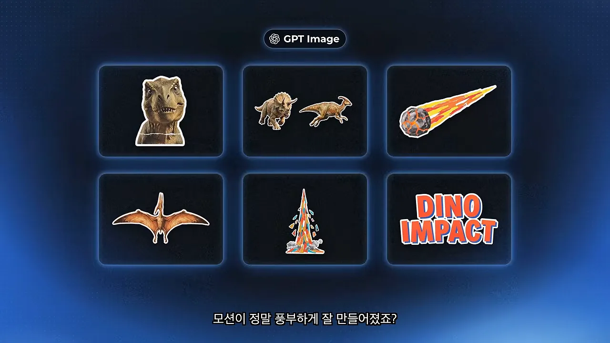
마지막에는 'DINO IMPACT' 타이틀과 엔딩 문구가 음악에 딱 맞춰 떨어져요.
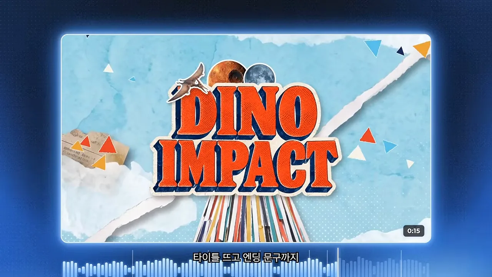
배경음악은 ElevenLabs의 음악 모델(Eleven Music V3)로 만들었어요. 노드 아래 프롬프트에 '보컬 없음, 134 BPM, 타악 중심 그루브, 9.5초부터 긴장감 상승, 10.6초에 강한 타격, 13.4초에 큰 충돌음'이 적혀 있어요. 계획서에서 분석한 BPM과 타이밍이 그대로 음악 프롬프트로 넘어간 거예요.
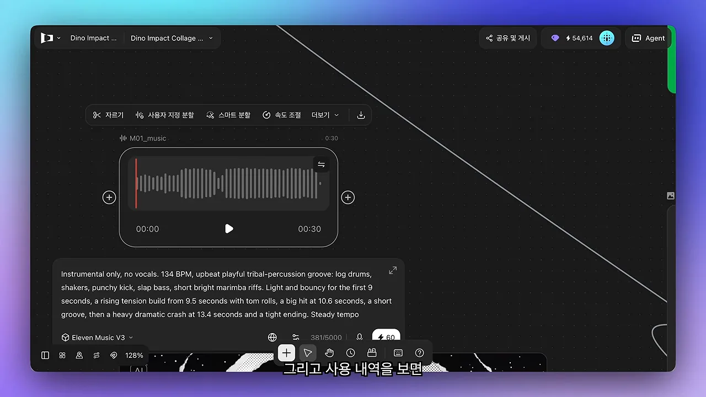
사용 내역을 보면 약 670크레딧을 썼어요. 다만 15초 영상에 2시간이 걸려서, 효율적인지는 잘 모르겠다는 게 발표자의 평이에요.
전문가 레퍼런스로 한 번 더, 그리고 언제 뭘 쓸까
이미지 에셋과 코드를 합친 방식으로 어디까지 되는지 궁금해서, 이번엔 모션그래픽 전문가가 만든 영상을 레퍼런스로 골랐어요. 주제는 '비잔틴 장군 문제'예요. 산과 성벽에 종이를 오려 붙인 듯한 거친 질감이 있고, 사람과 말에도 디테일이 다 들어 있어요. 이런 디테일은 코드로 만들기 어려워요.
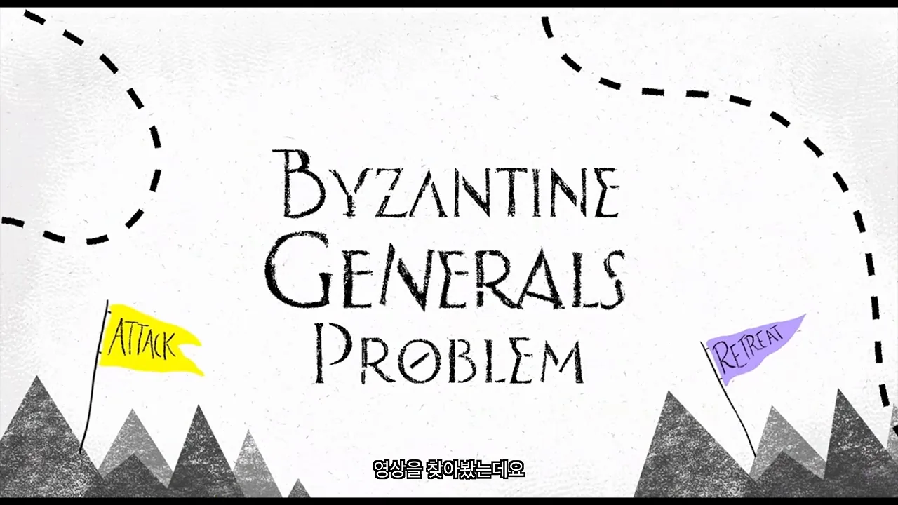
움직임은 여기서도 툭툭 끊기는 스톱 모션이에요. 같은 방식으로 레퍼런스를 분석시키고, 주제는 '심리학의 방어기제'로 바꿨어요.
방어기제 영상 결과
원본 느낌이 꽤 나요. 산과 성의 종이 질감, 노랑·보라 포인트 색을 그대로 가져왔고, 구도도 원본을 거의 따라가요. 레퍼런스의 'ATTACK'·'RETREAT' 깃발 자리에 '수치심', '죄책감'이 적힌 연보라 깃발이 들어갔어요.
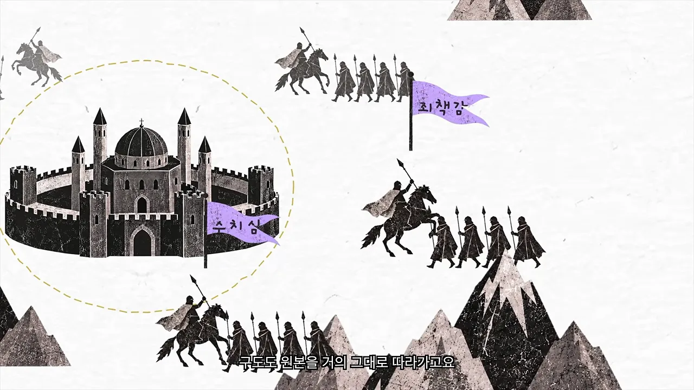
재미있는 건 주제를 바꾸니 내용도 알아서 맞춰졌다는 점이에요. 이미지들이 각 방어기제를 잘 표현해요. '합리화' 장면은 등 뒤로 손가락을 꼬고 '원래 하려던 거였어'라고 말하는 사람이에요.
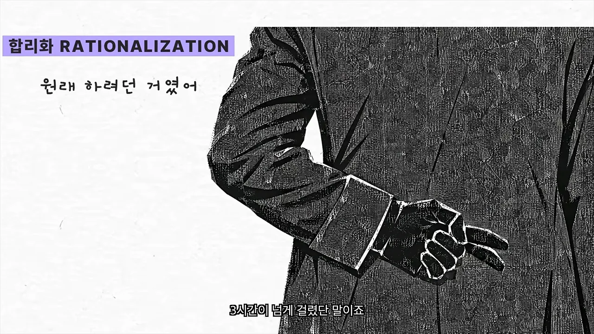
아쉬운 점은 에셋 가장자리가 일자로 잘려 있다는 거예요. 프롬프트에서 가이드를 주면 나아질 것 같다고 해요. 더 큰 문제는 시간이에요. 1분짜리 영상에 손이 많이 가는 작업이긴 했지만 3시간 넘게 걸렸어요. 다른 일을 하며 병렬로 돌리는 게 아니라면 효율적이지 않다는 게 발표자의 판단이에요.
오래 걸리는 영상이라면
발표자는 두 가지를 권해요. 렌더링 전에 스토리보드를 먼저 만들어 달라고 해서 미리 확인하는 방법이 하나예요. 다른 하나는 영상 생성 플랫폼에서 Seedance나 MiniMax로 만드는 거예요. 그러면 20~30분 만에 이 정도 퀄리티가 나와요. 아래는 MiniMax H3로 만든 15초 결과예요.
Seedance 2.5 결과는 '억압(REPRESSION)'을 노란 꼬리표와 상자 속에 눌린 형체로 표현했어요.
언제 무엇을 쓸까요
영상에서 나온 시간을 한 번에 놓으면 차이가 분명해요. 길이가 서로 다른 영상이라 정확한 비교는 아니지만, 이미지와 코드를 합친 방식이 몇 배 오래 걸린다는 건 보여요.
발표자의 결론을 표로 옮기면 이래요.
| 이런 영상이라면 | 추천 | 이유 |
|---|---|---|
| 글자·도형·UI 중심의 모션그래픽, 키네틱 타이포그래피 | 코드(Claude) | 글자가 깨지지 않고, 디테일한 프롬프트로 퀄리티가 크게 올라요 |
| 규칙으로 정의되는 스타일(아스키 아트, 픽셀 아트, 다빈치 스케치 등) | 코드(Claude) | 한 줄 프롬프트로도 잘 나와요 |
| 일러스트레이션, 캐릭터가 나오는 영상 | 영상 생성 모델 | 코드로는 아쉽고, 영상 모델이 훨씬 잘 만들어요 |
| 움직임이 아주 복잡한 영상 | 영상 생성 모델 | 이미지+코드로도 되지만 몇 시간씩 걸려요 |
| 사실적인 영상 | 영상 생성 모델 | 당연히 영상 모델이 더 잘 만들어요 |
그래도 애니메이션이나 영화 느낌의 영상을 코드로 꼭 만들어 보고 싶다면, 발표자는 GitHub 저장소 lemo-opuscar를 참고하라고 해요. 화면은 그 데모 'OPUSCAR 98'로, 아카데미 작품상 98편을 한 캐릭터가 영화마다 다른 화풍으로 지나가는 6분 31초짜리 영상이에요. 아래 설명에 모든 프레임과 음, 컷을 Claude Opus 5.5가 코드로 썼다고 적혀 있어요.